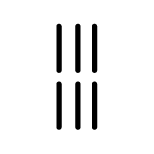

Confirm the shape of five ‘round’ seals
The round-seal finding rests on 8 seals from the Indus region. Only 3 are confirmed round in a printed excavation report.
Specialists · Anyone careful
Open Indus · an open research group
Today we know how the script is built, not yet what it says. No sign has a proven sound or meaning.
Deciphered means: sound values for at least 10 signs that beat chance on our public test bench and survive an independent red team. Our honest odds of getting there by 2027 are under 1 in 10. Every idea is tested in public, on texts it has never seen, and what fails is published too.
02Findings
Each was found on one part of the texts, then confirmed on texts held back, then attacked by a second agent.
Sign order picked out on unseen texts
Fish with ticks  →
→  closes the text
closes the text
Six

is followed by fish
Seals found abroad break the order

BParts
The round-seal finding rests on 8 seals from the Indus region. Only 3 are confirmed round in a printed excavation report.
Specialists · Anyone careful